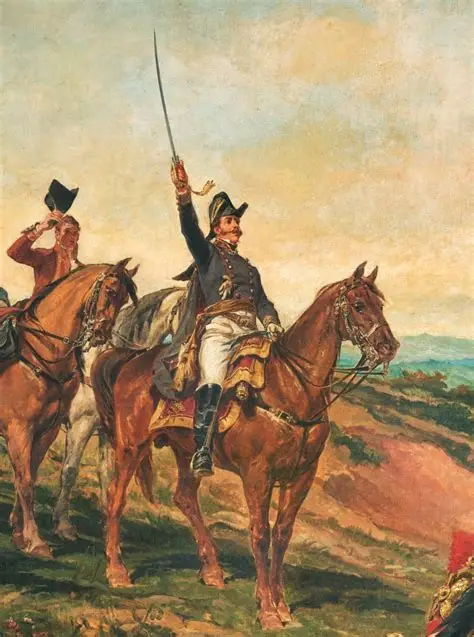
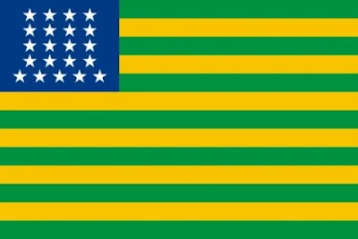

Frases para Inspirar
“Independência se constrói todos os dias com educação, trabalho e respeito.”
“Verde da esperança, amarelo da riqueza, azul do céu e branco da paz: símbolos de um Brasil que queremos ver.”
“Nossa história inspira; nossas escolhas constroem o amanhã.”
“O Grito da Independência ecoa como símbolo de liberdade e cidadania.”
Imagens Históricas

